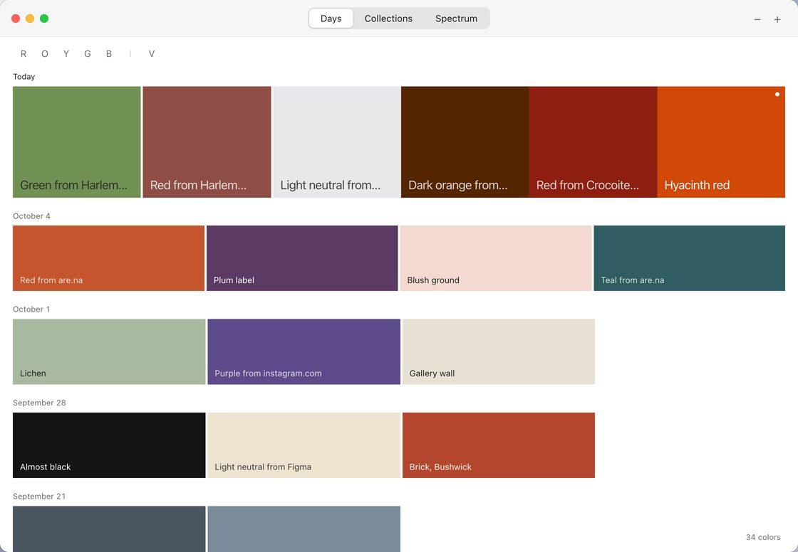
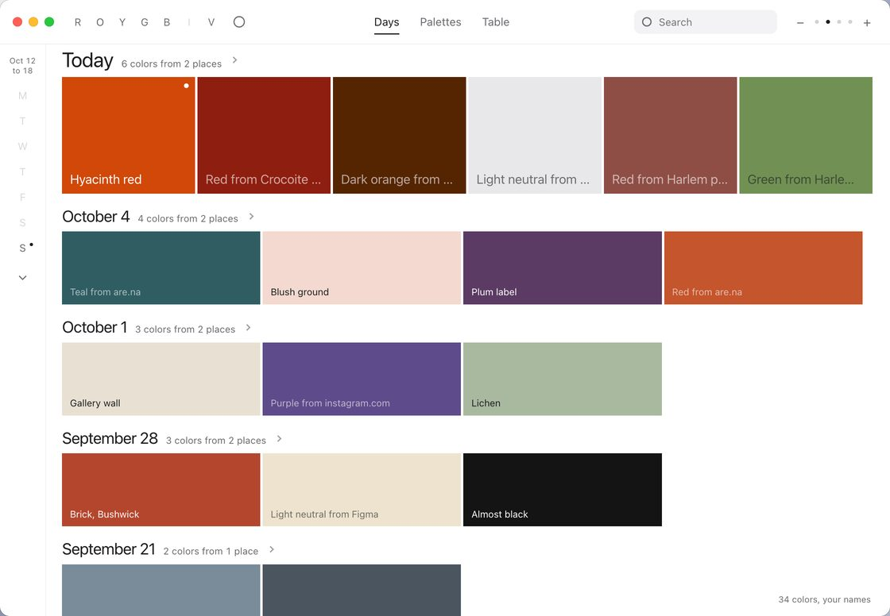

v3 workshop
I'm not sure. Now we're slightly losing the authenticity and charm of the original app. Can we potentially revisit with another workshop? Then establish our final, v3? Too much is going onNoah, October 18
I really want to make this app more polished - and a little more presentableNoah, October 18
Two passes, in order. First take away: every piece added since this afternoon has a switch, and the window beside the switches is the prototype itself, live, so you see each choice before you make it. Then polish: a short list of finishing moves for the build. Pick, add a note, press “I'm done” and tell me in chat. v3 is built from what you leave on.
What changed since this afternoon
The same window, the same 34 colors, on Days, before and after this evening's merge. Measured in the window, not judged by eye.
Twice the controls, and three times the words
Counted on Days at the default zoom, with nothing open.
| Afternoon | Now | |
|---|---|---|
| Controls around the colors | 15 | 29 |
| Controls among the colors | 0 | 5 |
| Type sizes | 5 | 8 |
| Lines of gray text | 13 | 18 |
| Words outside the colors | 23 | 61 |


Claude's read, for you to check
Each piece added this evening was a good idea on its own, and most were yours. But each one brought a control, a size or a line of words, and together they compete with the colors. This afternoon's window was almost all color, and that may be the charm you're missing.
So for each piece, the question isn't whether it's good but whether it has to be on screen all the time. Most can stay in Palit and still leave the window: behind a tab, a key, a right-click or a zoom stop.
First, take away
Twelve switches, one for each piece. They start at now. Flip them and the window changes; click around in it too. The tags say what each option was this afternoon, what it is now, and what Claude recommends.
Counted in the window above, the same way as the table.
Then, polish
What makes it look finished and presentable once there's less of it. These are build work for Claude, not new features. Tick the ones you want; all are recommended.
After you press “I'm done”: v3 takes your switches as its own, the polish goes in, the playback and the dashboard's frames move to v3, and v2 stays as it is for the process story.